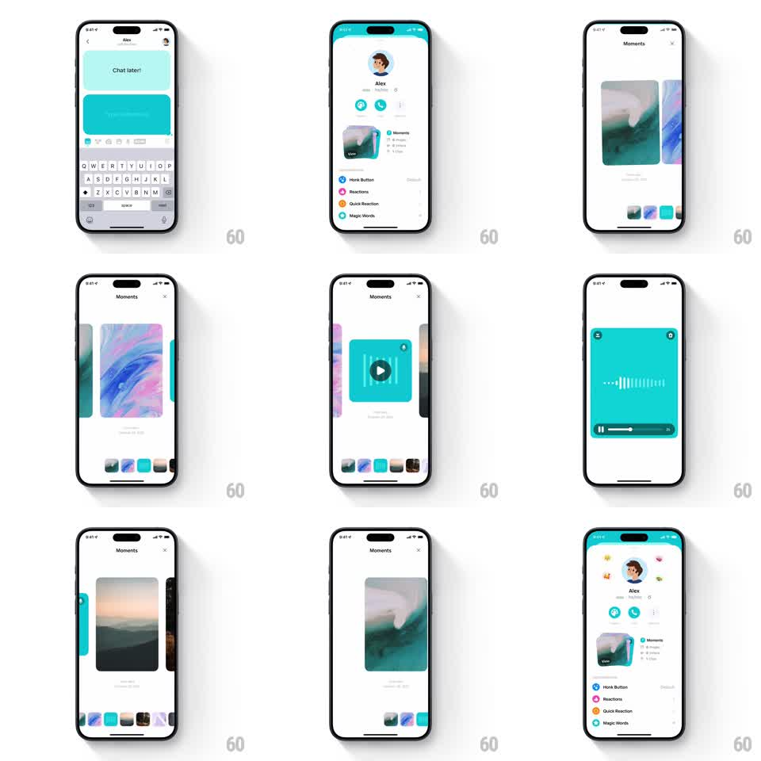

Media
Frame-by-frame

Rebuild this interaction 1:1: Honk's profile Moments - tapping the stacked Moments card on a profile expands it into a full-screen swipeable carousel with a thumbnail strip, and an audio moment expands further into a full player with an animated waveform.

Rebuild this interaction 1:1: Honk's profile Moments - tapping the stacked Moments card on a profile expands it into a full-screen swipeable carousel with a thumbnail strip, and an audio moment expands further into a full player with an animated waveform. ## Integration Integration: stack-agnostic spec - springs given as stiffness/damping, timed motions as duration + curve; map every value to your framework and animation library of choice. ## Scene Profile of Alex (avatar, action buttons, settings list) with a "Moments" card showing a stack of moment images and a "View" label. The Moments viewer: full-screen white, "Moments" header with X, a horizontal carousel of large rounded moment cards (abstract art, landscapes), a thumbnail strip at the bottom. An audio moment (teal card with play button) expands into a full-screen teal player with a live waveform and a scrub bar. ## Motion spec Pattern: shared-element stack expansion with carousel and nested player. - Tap the stack: the top card morphs from its small profile slot to the full-screen carousel position (shared-element: position + size + corner radius over 350ms, spring ~300/22); the remaining stack cards fade/slide into the thumbnail strip (stagger 40ms). - Carousel: horizontal swipe pages cards 1:1 with the finger, snapping between moments (spring ~300/22); the thumbnail strip scrolls in sync, active thumbnail scaling up (1 -> 1.2) with a white ring. - Audio moment: tap play - the card expands to full-screen (same shared-element morph, 350ms), the play glyph morphs to pause, the waveform animates (bars oscillating with the audio, amplitude randomized per frame), and the scrub bar fills left to right in real time. - Dismiss: X or swipe-down reverses the morph back into the profile stack (350ms). ## Calibration - The morph keeps the image content aligned at all times - no crossfade between small and large. - Carousel neighbors peek at the edges (~12% visible) to advertise swiping. ## Reduced motion Viewer crossfades open (250ms); swipe paging without physics; static waveform. ## Don't miss - The waveform is audio-reactive, not a static image; bars dance while playing. - The thumbnail strip mirrors carousel position exactly - highlight and scroll stay in sync.